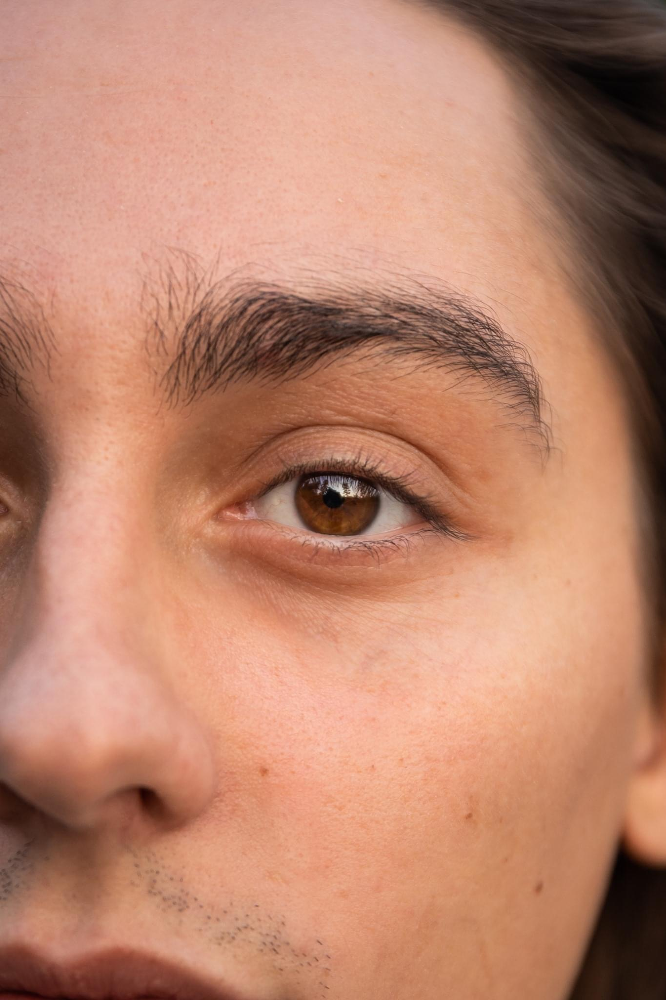
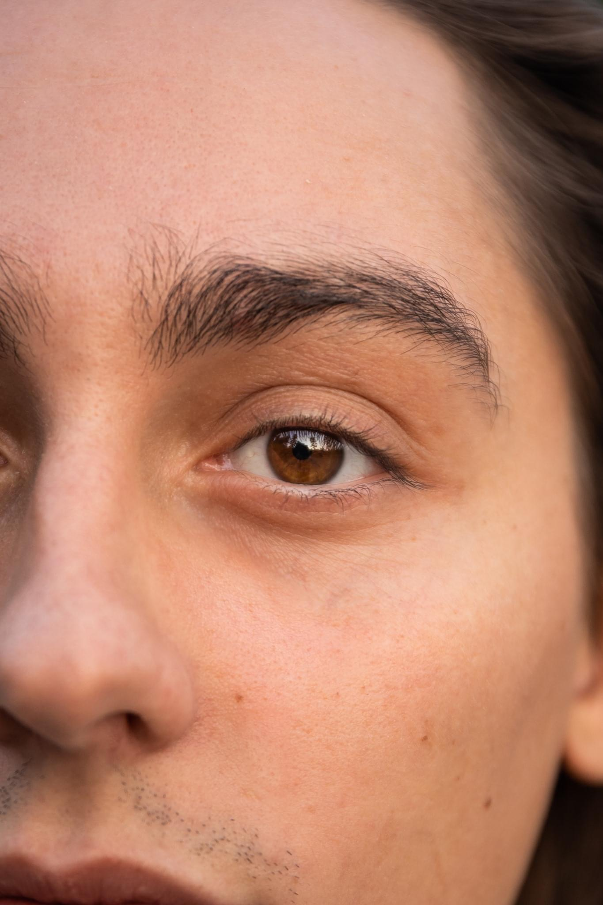
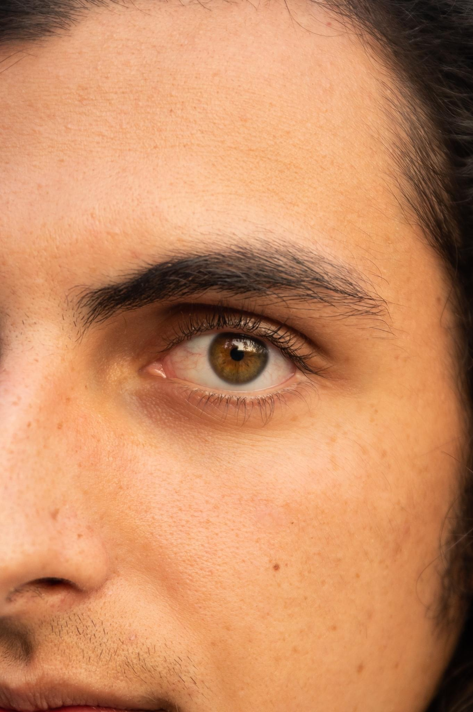
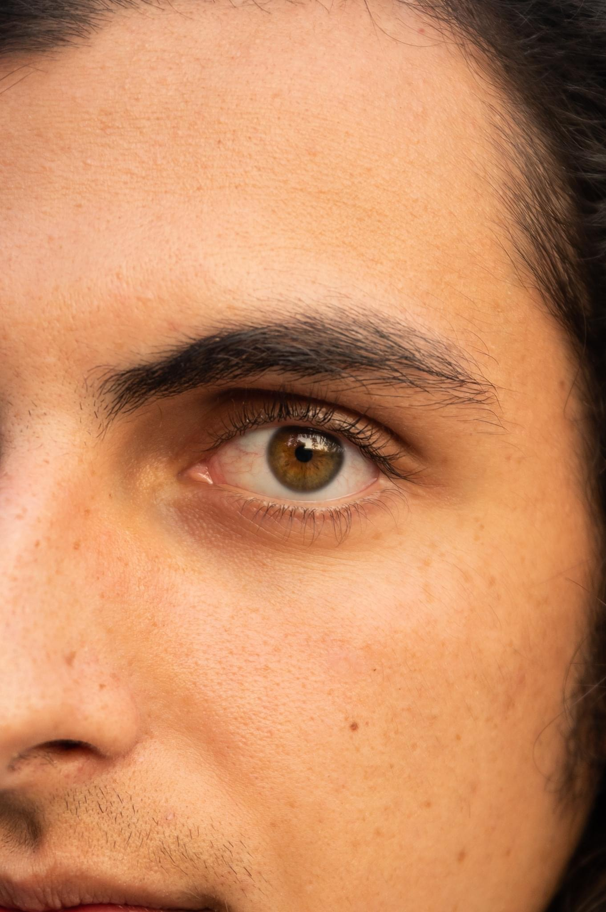

In 2017, three brothers and their best friend formed a band with a unique yet nostalgic rock sound in their hometown of Frankemuth, Michigan called Greta Van Fleet. The band was named after an elderly woman in their town named Gretna Van Fleet, but they dropped the "n" to avoid inevitable mispronunciations.
The band's fame began with their first hit single called "Highway Tune," which topped the Billboard charts for several weeks. Soon after, the band won a Grammy Award for Best Rock Album in 2019 for their EP called "From the Fires". Following this win, the band released "Anthem of the Peaceful Army." A clip of the band performing the song "You're the One" off of this album on Saturday Night Live went viral on Tiktok. Their fame has continued after their recent album release called "The Battle at Garden's Gate," with the song "Age of Machine" winning Best Guitar Solo in 2021.


 

 
